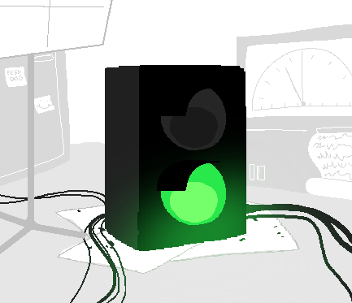
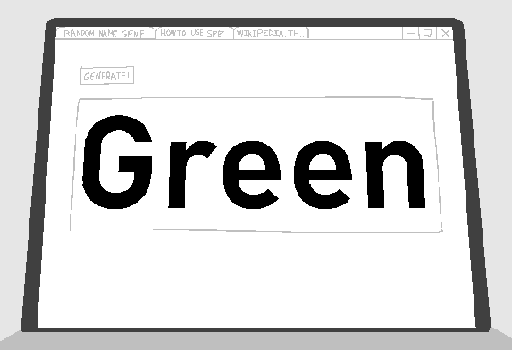

You wanted to know why I brought you in today?
Yeah. It better be something real interesting.
...
...becaauuse
You guys brought me out of retirement for pete's sake! That normally doesn't happen with my job. Or yours. Gettin' real sick of just sitting he
I know, I know, just... its easier if you see it in person. I can't explain it. Maybe the lab boys can.
...
I just want you to see it for yourse
I get it. Let's go.
Sooo have you heard anything weird on the news? Maybe online..?
Would you just spit it out? No I haven't heard anything on the news or online.
Oh wow. Not even like a... video... post... no nothing? Man its been like, all over some well known forums and news sites. Even some conspiracy theorists are talking about it...
Could you please just tell me.
God man, fiiine. Couple hours ago there was this traffic light on, uh, Stey... Steymann street? Something like that.
Uh huh
This traffic light then somehow changes shade. Not Like, changes from stop to go, but changes to a shade not you or me or anyone else has ever seen. Weirdest thing ever. Totally breaks at least one law of physics.
Now we're talkin'. When did this happen?
I said a couple hours ago.
Oh, right.
So, what, people crashed their cars at the sight of a new never-before-seen shade?
Not really no. The guys packing it up to the lab said there were a bunch of people just staring at it. Some pedestrians, a couple drivers got out of their cars... Makes sense though. No car crashes.
That's it? Also what do you mean by makes sense?
Well its a pretty quiet street. Not many cars. And plus if you saw that thing on your commute to work you'd probably also step outside to get a better luck- look.
That's dumb.
People are weird, man. Its just what I've been told.
Also, we're here.
I think thats them.
Hello! You must be the new guy right?
Ah, yes, thats me. Quite new here... And you must be
Yeah yeah, us. You're working on the light right? Where is it.
Oh um, I was just assigned to a traffic light that came in around lunchtime actually. Very weird, I've never seen something like it. None of the instrume
Where is the traffic light.
Come on man, he's new here
Oh its... right through this door actually. W-We can talk a bit about it outsi- oh ok you're walking in. Ok.
...
Holy shit.
What lemme see

Holy shit!
You haven't seen it? I thought you saw it.
Oh I was only told! But this, this is... holy shit. Pardon my french.
You are excused.
As I was saying none of the instruments they gave me are working. Well I mean they're working but they're not showing anything special. The only thing going crazy right now is the spectrophotometer.
Spec... Specto- Nevermind- what's it saying?
Its an instrument used to measure properties of light over a specific portion of the electromagnetic spectrum, typically used in
I can tell you're reading off of Wikipedia. Again, what's it saying.
Sorry- so its got this wavelength output right. If you pointed it towards a normal object you'd see the its shade. The shade it emits. Pointing it at the light makes it go bonkers. It flashes random values and I don't like looking at it. Makes me feel uneasy.
...why are you so close to it?
Oh sorry, its just, its weird. Its mesmerizing. I know we can define it as "something nobody has ever seen before" but damn, I didn't think it'd be... this.
...
Uhh, any other things?
What do you m-
Uh, right. There is this other thing.
None of these cables are supplying power to that thing.
...
What I mean is that its powering itself. Somehow. Or it has a battery. Or its-g- just, I don't know! Its weird.
Oh. Cool.
You know I thought about putting a solar panel or something on it but by the looks of it, doesn't look like we'll get much out of it. Just thinking of things to do with it.
You're real quiet, what'cha thinking about?
No jus lookin' at it. The more I look at it the more I think about how that... "shade" needs a name. Like a label.
We can use an R N G random name generator to make a name for it.
We should probably ask
No hold on. Let him do it. I think it'd be funny.
ooooo-k let me just oop- gotta close that wiki article ...ok here we go

Guh-reen
Guh-reen
Guh-reen
Guh-reen, Grr een...
Green!
I like that. Let's keep that.